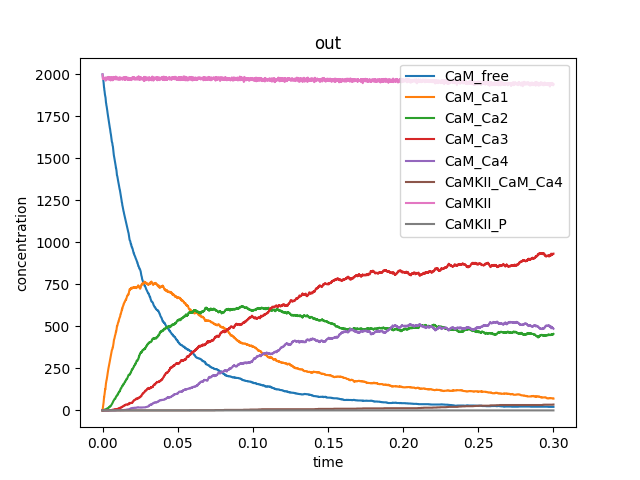

4 Computer models of CaMKII/NMDAR interactions
As mentioned in the introduction Chapter 1 of this report, I use computer models to study interactions between specific postsynaptic molecules; below I describe what these models look like and what software I use. Likewise I also explain how I have been working on creating a reproducible model and the validation steps taken to achieve this. The aim is to model CaMKII as a dodecamer molecule, including effects of space in it’s interactions with NMDAR during NMDAR-dependent LTP. A list of components and interactions represented is not available at this time, but I aim to create a list and/or table listing all known phenomena that the model should replicate in the near future. As an example of what the components, interactions and 3D space can look like, see Figure 4.1.
4.1 BioNetGen and how rule-based modelling can help with combinatorial complexity.
BioNetGen is a set of software tools which facilitate a rule-based approach to modelling biochemical reaction kinetics, where we can largely overcome the problem of combinatorial complexity that arises when modelling CaMKII. It has been calculated that CaMKII as a dodecamer can approximately have 1020 possible states (Pharris et al. 2019); this, together with the potential of a full reaction network for each simulation (an added factor of combinatorial complexity), can render the model computationally intractable. BioNetGen can help us deal with this combinatorial complexity thanks to its rule-based modelling (RBM) “don’t care, don’t write” capabilities. And as we will see later MCell can help with modelling network-free simulations.
BioNetGen language (BNGL) is a formal language which uses the BioNetGen software (Faeder, Blinov, and Hlavacek 2009). It allows for site-specific details of protein-protein interactions to be captured in models for the dynamics of these interactions in a systematic fashion, which also alleviates nomenclature and reusability issues.
Hence, using this RBM approach is notable as it facilitates writing of multi-state modelling and can significantly, reduce the number of reactions that need to be written due to its “don’t write, don’t care” characteristic. Thereby dramatically improving the ability to model CaMKII as a dodecamer; I can make a model with multistate molecules, and specify the states of the reactants that are relevant for a particular reaction, and leave the rest unspecified (see Figure 4.2)
begin model
begin parameters
# Define initial number of molecules released
A_i 150
B_i 150
C_i 100
#Define reaction rates
kon 1e-2
koff 1e-3
k_P 1e1
end parameters
begin molecule types
# Here we define the molecules and the possible states and binding sites
they can have
# Molecule A has a binding site (a), and a Phosphorylation site which can
be unphosphorylated (~0) or phosphorylated (~P):
A(a,T286~0~P)
# Molecule B has a binding site (b):
B(b)
# Molecule C has no binding sites:
C()
end molecule types
begin species
# Molecule A starts with binding site a free, and with phosphorylation site
unphosphorylated
A(a,T286~0) A_i
# Molecule B starts with binding site b free
B(b) B_i
# Molecule C has no binding sites so it starts as it is
C() C_i
end species
begin reaction rules
# A_free and B_free can resversbly bind to give AB_complex
# Don't need to specify, if I'm not interested, status of phosphorylation
for molecule A. Note how it is not written in the rule definition (don't
care, don't write):
A(a) + B(b) <-> A(a!1).B(b!1) kon, koff
# If A is unphosphorylated, it can become phoshorylated by the presence of
C
# Don't need to specify status of binding site 'a' (don't care, don't
write):
A(T286~0) + C() -> A(T286~P) k_P
end reaction rules
begin observables
Molecules AB_complex A(a!1).B(b!1)
Molecules A_phosphorylated A(T286~P)
Molecules A A(a)
Molecules B B(b)
Molecules C C()
end observables
end model
simulate({method=>"ssa",t_end=>10,n_steps=>100})To interact with this code, you can have a look and download a jupyter notebook I have created here, where I also describe some of the ways in which the model can be simulated, with stochastic simulation algorithms (SSAs) or ordinary differential equations (ODEs). See screenshot from notebook in Figure 4.3 below.
4.1.1 MCell (Monte Carlo Cell) and how it simulates reactions in 3D
MCell is a biochemistry simulation tool that uses spatially realistic 3D cellular models and stochastic Monte Carlo algorithms to simulate the movements and interactions of discrete molecules within and between cells, (Bartol and Stiles 2000), (Kerr et al. 2008), (Bartol et al. 2015). MCell is a particle-based simulator that represents molecules as point particles in 3D space. At every time step in an MCell simulation, each particle can move, collide with other particles or surfaces, and undergo bimolecular and unimolecular reactions. The basic elements of a simulation step are as seen in Figure 4.4 taken from Gupta et al. (2018).
Briefly, MCell operates as follows: as a volume molecule diffuses, all molecules within a given radius along its trajectory, or at the point of collision on a surface, are considered for a reaction. For surface molecules (in membranes), the molecule first diffuses, and then its neighbours are evaluated for reaction.
There is no volume exclusion for molecules diffusing in 3D volumes, and molecules on surfaces occupy a fixed area. MCell allows defining arbitrary geometry Figure 4.4 (C), and complex models such as a 180μm3 3DEM reconstruction of hippocampal neuropil have been used to construct a geometrically-precise simulation of 100s of neuronal synapses at once (Bartol et al. 2015). A detailed description of mathematical foundations of MCell’s algorithms can be found here: Bartol and Stiles (2000), Kerr et al. (2008), Bartol et al. (2015).
MCell4, version used for this project, provides a versatile Python interface, which is very useful for writing models with said interface and running mcell models this way. MCell4 provides two different user experiences, one through its visual interface as an add-on in Blender 2.93, known as CellBlender (see back at Figure 1.2), the other user experience one through a new Python interface. This provides users with the flexibility to change between both experiences, or to run the simulations using Python and visualize the simulations in Blender (Figure 4.5).
Significantly, in MCell4 the reaction language is BNGL; making MCell4 fully support rule-based reactions and allowing all models to use this feature. The support for BNGL and network-free simulations of MCell4 allows direct, agent-based evaluation of reaction rules and thus enables spatially-resolved network-free simulations of interactions between and among volume and surface molecules. The CaMKII models I developed during this PhD would not be possible without the spatial network-free simulation allowed by MCell4.
4.2 Model description
With the idea of making reproducible research, it is good to build up step by step a model, and the same processes used in software development can also be applied to biological model development. Therefore, when developing the models in this project, four main points were considered throughout, as suggested by Husar et al. (2022):
Create incremental development where the model is built step by step, relying on solid foundations of modelling done and validated before,
Create a modularity that provides the capability to create self-contained, reusable libraries,
Perform unit testing and validation to verify that parts of the model behave as expected and,
Create human-readable and writable model code that can be stored using git or other code version control software which also allows code reviews so that other team members can inspect the latest changes to the model.
With this and robustness, replicability, reproducibility and generalisability (as defined in Chapter 2) in mind, I managed to make a model which was successfully reproduced in other people’s machines. This means that the results of the model (Figure 4.7), where able to be reproduced by someone else using the same dataset which consistently produced the same answer.
I have constructed the models at different scales to validate CaMKII interactions with other molecules like calmodulin and NMDARs, at increasing levels of complexity. First I re-created a model of CaMKII as a monomer that was previously completed in 2017. The model created uses cBNGL and represents CaMKII as monomers to serve as a proof of concept as well as a starting validation point, as dynamics of this model were previously shown to be within biologically accurate limits. Secondly, I created a model of CaMKII as a hexamer since modelling this molecule as a dodecamer gave rise to a combinatorial explosion due to the high number of possible states and the network of interactions generated. This was them resolved as I run the model using the network-free simulation capabalities using MCell. This has then resulted in being able to create a (still in the workd) model of CaMKII as a dodecamer. These simulations include only calcium binding to CaM, and CaM binding to CaMKII as a dodecamer, without further reactions added to avoid further complexity. Finally, I aim to validate this work against a model from Ordyan et al., 2020, where they successfully modelled CaMKII as a twelve subunit holoenzyme using BioNetGen simulations.
4.2.1 Model development and validation: CaMKII modelled as a dodecamer
CaMKII is a dodecameric molecule, meaning it’s composed of twelve subunits. In the past I have modelled CaMKII as a monomer and as a hexamer, building up the models and validating with existing published research. Now, modelling it as a dodecamer allows us to infer more accurately any emergent behaviour of this protein.
In order to replicate and validate the results obtained from the CaMKII monomer in 2017, I have been re-writing all reactions into a cBNGL model using the same parameters used originally, then building CaMKII as a dodecamer instead of a monomer. I define a volume previously modelled of 0.5μm3, which is within ranges of spine volume of 0.004 to 0.6 μm3 in hippocampal CA1 neurons (Harris and Stevens, 1989). Using cBNGL, I can specify the above mentioned 3D volume, with a 2D surface compartment acting as the cell membrane, where NMDARs can diffuse.
As well as modelling the multimeric properties of our molecules of interest, an aim of this project has been to further refine the spatial computational model to check if the prediction of the distribution of phosphorylated CaMKII is still valid, as described in 2017 model, and if so incorporate existing biological data. Previously, the head of dendritic spine was modelled as the cell, with a PSD shown in blue where there was a higher number of NMDARs (Figure 4.6). The prediction made was that if CaMKII binding to NMDA receptors is disrupted, we get more CaMKII activation overall, this was a counterintuitive result because NMDA receptor binding is known to activate CaMKII, so their disruption was assumed to have decreased CaMKII activation. It will be interesting to see if these results replicate with CaMKII as a hexamer, or if not then it might show new insights as to how CaMKII and NMDAR abolition results in the new models.
Parameters used in this project so far requires further analysis, as well as additional investigation of specific reaction parameters. As mentioned in the introduction section, finding parameters, if any, for computer models is a challenging as they tend to vary from publication to publication. For now, I used the validated parameters used for my thesis in 2017 (table 1). I hope to run sensitivity analysis to determine how much parameters used affect model behaviour.
An important part for the last part of this project has been to validate CaMKII holoenzyme activity against the model published by Ordyan et al. (2020). As well as an extended model published in 2022 (Husar et al. 2022) where they observe the effects of the geometry of the compartment on the simulation results thanks to MCell4. Their work adopts a RBM approach through the Monte Carlo method to study the effect of Ca2+ signals on the dynamics of CaMKII phosphorylation in the postsynaptic density. Their study looks at calcium surges in synaptic spines during an EPSP and back-propagating action potential due to the opening of NMDA receptors and voltage dependent calcium channels. Using agent-based models, they computationally investigate the dynamics of phosphorylation of CaMKII monomers and dodecameric holoenzymes. This model is very useful to have as a validation point, firstly to see if my results compare to what they observed, and hence enabling reproducibility of results. It is also helpful to have a model which looks at CaMKII but focuses on its interactions with other molecules, as this adds further to the narrative of how CaMKII functions.
One of the main questions of the research is to look at the dynamics of interactions between NMDARs and CaMKII in the postsynaptic neuron. The models created will state the predictions which will then enable us to generate hypothesis for system dynamics behaviour. It would not make sense to start asking questions about this if the basis of the model is not coherent and cannot replicate baseline molecular behaviour. Therefore, it is very important that validation of the model build up is carried out meticulously and reasoning as to why each step and decision was made is explained.
4.2.2 Results
CaMKII modelled as a dodecamer runs, below I just show a sequence of reactions, not all molecules to be modelled are shown. Following the step by step validation of a model, these results were able to be reproduced by Nicola Romano on a different machine, with a different operating system to mine.

This was possible thanks to the efforts put into creating detailed step by step instructions on how to implement and run the model. These instructions currently live in a private repository in GitHub, which hopefully will evolve into something publishable. This repository includes a README.md file that allows you to know how to:
- Install MCell/CellBlender v4.0.6 bundle with Blender 2.93.
- Set up MCell4 Python in your machine and why this is necessary.
- Set up a python environment with any potential dependencies required to run the code.
- Run the code and what output is expected for comparison.
4.3 Advantages and limitations
This work has, therefore, this PhD project is eqquipped with strong advantages for future, trustworthy research done by other people, as well as for myself as I am able to keep cleaner, more neat track of what exactly I am developing. Some of these advantages include:
- Ensuring continuity of work. By following guidelines for reproducibility, I can easily communicate work with different stakeholders whether that’s my supervisors, future funders, reviewers, students, and potential collaborators. This aspect of reproducibility increases the usefulness of this research by allowing others to easily build on our results, and re-use the research materials I created. This ensures the continuity of a research idea and can even, hopefully, find fresh applications in other contexts.
- Being able to track a complete history of my research. By storing a complete track-record of my work, I can ensure research sustainability, fair citation/acknowledgement, and usefulness of my and others’ work in our research fields.
- Facilitation of collaboration and review process. Reproducible workflows have facilitated the peer review process tremendously by allowing other people not directly involved with the project to have access to the different parts of the projects that are necessary to validate the research outcomes.
- Writing papers, thesis and reports efficiently. Putting an effort in maintaining documentation of methods and analyses helps in maintaining easy access to all the results generated in the project that can then be written up efficiently. Additionally, by making available the underlying dataset and methods makes it more easy to comply with the highest-level journal guidelines.
- Get credits for work fairly and more often. Applying reproducibility practices separately on different parts of the project such as the data, code and scripts, and reports will enable other researchers to test and reuse my work in their research and therefore also allow for more fair recognition. Researchers who publish their work with the underlying information, get cited more often as their research outcome can be broadly replicated and trusted (Pienta, Alter, and Lyle 2010), (Vandewalle 2012).
It has been challenging (and fulfilling) to learn and apply reproducibility practices. Learning to create reproducible research that also thinks about its ethical connotations takes time. This has meant that most of my third PhD year has been spent interacting with different communities (see Chapter 5 on activities), creating contacts that can inspire and help me in creating quality research, and also getting hands on experience on creating bits of reproducible, accessible and open research - as exemplified throyghout this report. This also means that I have had to balance my time between creating reproducible models, as well as the models having a significant biological outcome that is valid and can help further understand the mechanisms of how CaMKII and NMDARs interact in the postsynaptic neuron during memory. Now that this project has strong pillars to build up-on, I hope to be able to focus more time on looking at the biological aspects of these models.